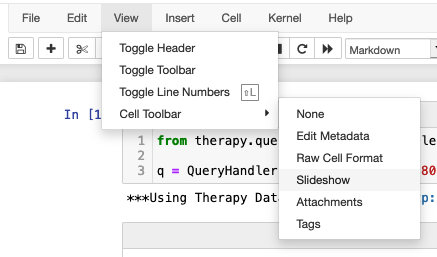
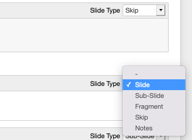

The Jupyter notebook, controversial though it may be, is a core data exploration and experimentation platform for many in the data and scientific communities. In particular, its combination of REPL-like input and embedded HTML output make for an ideal means of generating and analyzing data tables and visualizations. This is great for sharing information with others -- and, it turns out, the Jupyter ecosystem includes tooling to quickly generate reveal.js presentations using the included nbconvert library.
For local service, you'll need to provide a path to the reveal.js library. It's probably easiest to clone it into the working directory of your notebook:
git clone https://github.com/hakimel/reveal.js.git
Then, run the export command to initiate the reveal.js service:
jupyter nbconvert my_example_notebook.ipynb --to slides --reveal-prefix reveal.js --post serve
```
The --to option actually accepts a number of possible output formats, including PDF (try jupyter nbconvert --help to see other options), but the slides argument targets reveal.js slides. --reveal-prefix should point to your local reveal.js directory, and --post serve specifies that the reveal.js serve command should be run following conversion.
By default, every cell is treated as a unique slide, but you have some basic control over how cells are turned into reveal.js objects. First, select the "slideshow" view from the menu:

You can choose from a few different slide types for each cell:

"Sub-slide" creates a separate slide which is grouped within the closest "Slide" (in reveal.js presentations, lateral movement will change parent "Slide" groups, while vertical movement will proceed within an individual slide grouping). A "fragment" will be conjoined to the previous slide/sub-slide, but will be revealed on an extra enter/arrow-key press/click (sort of like the "appear" animation in Powerpoint progressively reveals individual bullet points).
See example output here.
A few closing notes:
The nbconvert docs suggest reverting your reveal.js source to version 3.5 (via git checkout 3.5.0 in the reveal.js repo). I found that this broke a bunch of core styling references -- the documentation is probably in need of an update there.
Jupyter notebooks don't immediately auto-save state, so remember to click the "save and checkpoint" button before exporting to ensure that you capture the most recent iteration of your work.
Theoretically the HTML output should be able to pull requisite scripting from a reveal.js CDN, but it didn't seem to work for me ¯\_(ツ)_/¯.
reveal is flexible about sizing for a lot of things, but will struggle with images (and probably code output), so make sure to double-check that any visual output looks right in a presentation beforehand (you may need to resize it)